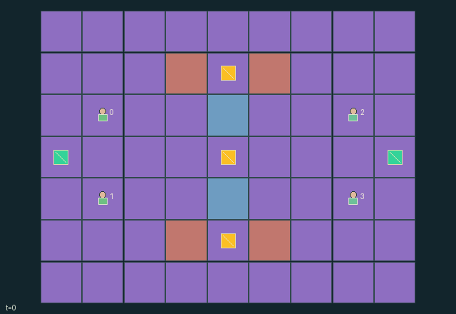

GI083 · Relay Bastions

Original recording scope: 原回放视角 · Mode: 固定脚本演示
Additional generated state replay (different trajectory / full-state debug)

Owned uncontested nodes pay every fourth step, weighted top 1, center 2, bottom 1. Both teammates receive own-team minus opponent point increments; opposing team receives the negative.
Identity and original contract
4 independently actionable roles; 10 discrete commands per role; 112 native observation columns per role; original horizon 96 steps. Declared per-step reward range: -4 to 4. Observation regime: fully_observable.
Source SHA-256: f13fabbc6d48ad8b92f984c905586710f64d4d48b07c984c253bcd18eebaebea
The objective, rewards, population, map and horizon remain original. A preview is not a success claim.
Objective and gameplay
Owned uncontested nodes pay every fourth step, weighted top 1, center 2, bottom 1. Both teammates receive own-team minus opponent point increments; opposing team receives the negative.
Opponent presence blocks capture and income. Coordinated pulses overcome limited protection. Shared energy and teammate shields make recovery, attack, defense and control partner-dependent.
- Two teams of two contest three nodes; the center pays twice the outer nodes.
- Attune within one tile. Operational opponents within one tile block progress and payment.
- Only meter +3 or -3 is owned. Partial counter-attunement makes a node neutral.
- Pulses spend one shared cell, selecting nearest eligible enemy on a clear cardinal ray of at most three tiles.
- Hits resolve simultaneously. Cover, brace and a live support shield each absorb one hit that tick.
- A disabling tag restores integrity to three and disables the next three decisions; the body remains an obstacle.
- Support reaches a teammate within two tiles and lasts two ticks. Home recovery adds two cells, capped at eight.
- Nodes pay every fourth tick. Twelve points ends naturally; horizon 96 otherwise truncates.
Ending: Either team reaching at least twelve points naturally ends jointly, including simultaneous threshold arrival. Otherwise horizon 96; no extra winner bonus. Raw terminal calls absorb with zero reward.
What this game explores
Resource commons & externalities: An action changes a persistent resource or burden that another role also encounters. Compare extraction with maintenance and record the downstream resource trajectory.
Joint transport & shared access: Positions, load geometry, occupancy and persistent access constrain whose action can succeed next. Distinguish physical handoff, shared controls and simultaneous force from a cosmetic cooperation label.
Team opposition & interception: Cooperation within a team can coexist with opposition between teams. Preserve team membership, capture and possession rules, and report each team's outcomes instead of assuming a single shared return.
These are questions supported by rule structure, not observed learning effects.
Play it: operating walkthrough
crucibles play --game gi083Keep Python running and open its printed address. Select this game, set a seed and press Create session. The game itself is always English.
Assign a role range to Host with Assign / take over, or Assign all roles. Invite a second participant with Create player invitation, then assign a disjoint subset. Every original role is available.
For every owned role choose a legal command and press Queue. Arrow keys / WASD queue a declared directional action for the current role camera when available. Space or Advance one joint step advances everyone together. Non-directional games use the selectors.
Unqueued roles use the labelled untrained uniform-legal policy. Take over or release roles before the next step without resetting. Full-state debug is privileged and permanently logged; role cameras preserve permissions. Close the session to retain logs. Server restart does not restore sessions.
Complete command reference
IDs and English labels exactly match the manifest. Availability depends on role, resources, location and phase. An available action can still have no productive effect.
0·Wait
1·Move north
2·Move east
3·Move south
4·Move west
5·Attune nearby objectives
6·Spend one shared cell to pulse the nearest eligible opposing operator
7·Brace this tick
8·Spend one shared cell to shield nearby teammate
9·Recover two cells at own home battery
Roles and capability identifiers
These original role names describe capabilities, not interchangeable skins. Check each owned role's legal selector before planning handoffs.
agent_0·West first operator
agent_1·West second operator
agent_2·East first operator
agent_3·East second operator
Information and observation permissions
All rule-relevant positions, terrain, scores, energy, integrity, stun, shield and relay states are public. Disabled roles have no-op only. Diagnostic per-step action flags are not native observation or scene event channels.
The GIF is full-state debug and may reveal hidden entities or private state. Train on obs[agent], not the picture, state tree or another role's private row. Field slices and visibility are in the original manifest.
Reinforcement-learning integration
import jax
from crucibles_jaxmarl import make
env = make("gi083")
key = jax.random.PRNGKey(0)
key, rk, ak, sk = jax.random.split(key, 4)
obs, state = jax.jit(env.reset)(rk)
actions = env.sample_actions(ak, state)
obs, state, rewards, dones, info = jax.jit(env.step_env)(sk, state, actions)
done = dones["__all__"]Observations are float32 vectors of width 112; actions are scalar int32; masks have 10 entries. Supply all 4 roles each transition. Masked sampling is an engineering reference, not a trained learner.
step_env retains terminal data without reset. step performs outer autoreset and keeps terminal data in info["raw_state"] and info["raw_observation"]. Use dones["__all__"] for episode boundaries; separate completion, failure and time limit in analysis.
JIT or vmap equal identities and shapes. Split independent reset, policy and transition keys. Group different shapes explicitly; do not shrink the population or horizon. Host rendering stays outside training.
Training questions and fair evaluation
Define valid completion from the objective before fitting. Preserve original rewards and also report real deliveries/services, losses, resource state, unresolved episodes and per-role returns. Animation is not a reward signal.
An action changes a persistent resource or burden that another role also encounters. Compare extraction with maintenance and record the downstream resource trajectory.
Positions, load geometry, occupancy and persistent access constrain whose action can succeed next. Distinguish physical handoff, shared controls and simultaneous force from a cosmetic cooperation label.
Cooperation within a team can coexist with opposition between teams. Preserve team membership, capture and possession rules, and report each team's outcomes instead of assuming a single shared return.
Compare memory, communication or centralized critics under matched actor information. Declare critic access; keep actor inputs role-filtered. Match partner/opponent distributions, masks, compute and checkpoint selection. Final tests never enter fitting or selection.
Independent training runs or source-pairing blocks are inferential units; episodes from one policy are not independent training replications. Save hashes, keys, versions, device, time and cost. Negative, zero, failed and indeterminate outcomes are valid. No trained checkpoint or target score is supplied.
Classification and evidence
Overlapping editorial labels are reading aids, not proof of novelty, difficulty, strategic equivalence or learning effects.
- Resource commons & externalities
- Evidence
manifest.task.objective: Owned uncontested nodes pay every fourth step, weighted top 1, center 2, bottom 1. Both teammates receive own-team minus opponent point increments; opposing team receives the negative.
- Joint transport & shared access
- Evidence
manifest.task.objective: Owned uncontested nodes pay every fourth step, weighted top 1, center 2, bottom 1. Both teammates receive own-team minus opponent point increments; opposing team receives the negative.
- Team opposition & interception
- Evidence
manifest.task.objective: Owned uncontested nodes pay every fourth step, weighted top 1, center 2, bottom 1. Both teammates receive own-team minus opponent point increments; opposing team receives the negative.
- Evidence
manifest.task.interaction: Opponent presence blocks capture and income. Coordinated pulses overcome limited protection. Shared energy and teammate shields make recovery, attack, defense and control partner-dependent.
- Evidence
manifest.task.observation_access: All rule-relevant positions, terrain, scores, energy, integrity, stun, shield and relay states are public. Disabled roles have no-op only. Diagnostic per-step action flags are not native observation or scene event channels.
Source, receipts and preview limits
The additional generated state GIF replays saved untrained legal actions through the original kernel. At most 25 actual endpoints include initial and terminal state; no invented interpolation. It is full-state debug, not the role observation. Where an original scene preview exists, it is displayed first with its own recorded information scope. The two recordings may use different trajectories and views.
Original source, observation slices, manifest and mechanism
Native receipt · Presentation receipt
Engineering passes do not establish learning. Nonzero floating differences remain recorded and undetermined; no new tolerance was introduced. Human scores remain unverified.